<!-- <mat-toolbar color="primary">
     
    <span class="example-spacer"></span>
        <button mat-button *ngFor="let item of menu" [routerLink]="item.redirect">{{item.nombre}}</button>
    <span class="example-spacer"></span>
    <button routerLink="/logout" mat-icon-button aria-label="Example icon button with a home icon">
        <mat-icon>logout</mat-icon>
    </button>
</mat-toolbar> -->

